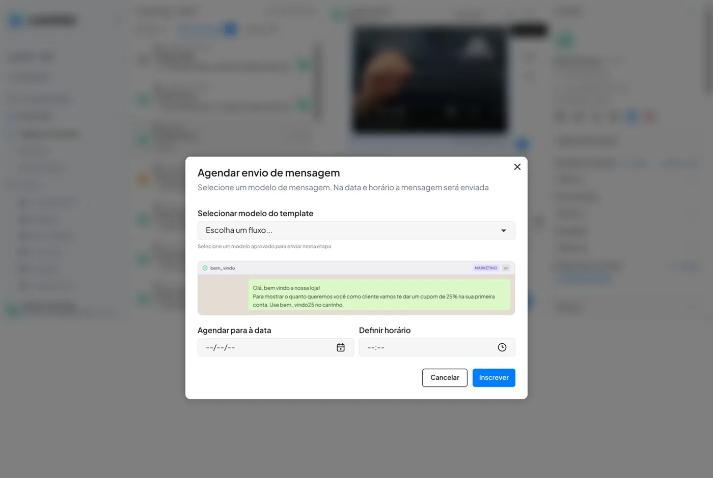
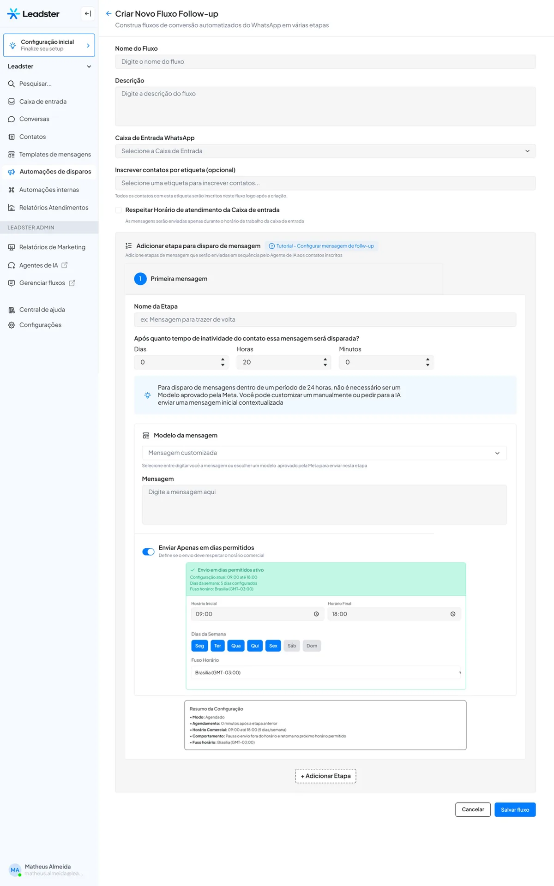
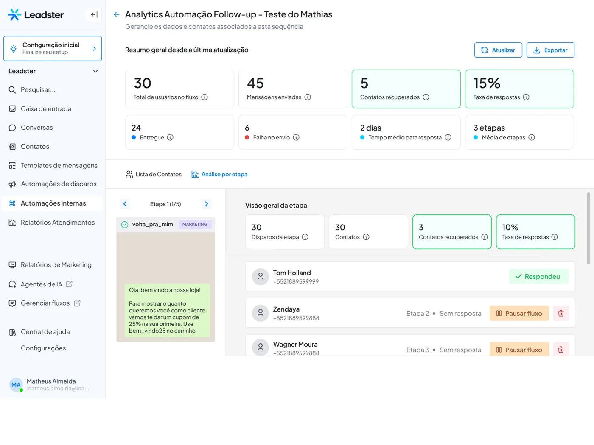
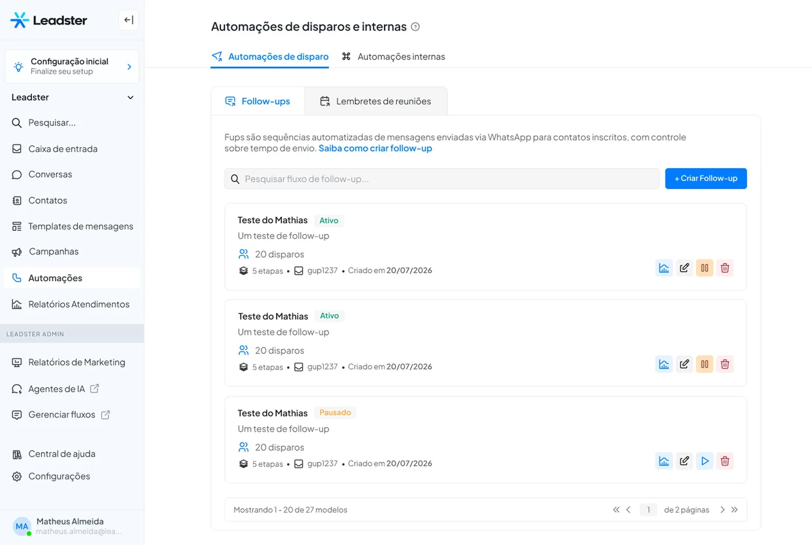

Sistema de Follow-up para além da janela de 24 horas
Sequência de mensagens para reengajar leads durante o atendimento.




01 / Problema
Resgatar leads que não retornaram
Nossos clientes estavam com envios de mensagens fora do período determinado pela Meta de 24 horas. Dentro desse período, pode-se receber mensagens livres e o envio das mensagens entra na franquia de 1.000 disparos disponibilizados pela empresa do WhatsApp. Naquele momento, nossa plataforma não tinha uma solução para além das 24 horas e para envios de campanhas únicas, o que levava à frustração da base de clientes na tentativa de reengajamentos e a potenciais perdas de vendas por falta desse recurso.
02 / Meu papel
Criar uma solução simples para uma expectativa alta
Atuando como Product Designer, meu papel foi buscar entender junto com os clientes (em grupos do WhatsApp) e a equipe de Customer Success qual era a dor do momento, quais as frustrações e o que poderia ser feito.
Com a coleta de informações e dados, realizei benchmarks de soluções atuais e gerei insights junto com o time de tecnologia, vendas, marketing e sócios.
Priorizada a ideia de criar um sistema de Follow-up, trabalhei ativamente na criação da jornada, telas, protótipos e testes internos e externos. Validei junto com todos os times e avancei para a criação das atividades no backlog e o hand-off.
Com a entrega, foram criados documentos de tutorial, divulgação e acompanhamento dos resultados iniciais.
03 / Processo
Ponta a ponta de forma muito ágil
Descoberta
Alinhamento com a equipe de Customer Success sobre as principais necessidades dos clientes. Entendimento com a equipe comercial sobre o motivo da perda de vendas. Conversa com clientes sobre as insatisfações com o produto.
Definição
Com os insights coletados, alinhamento entre todos os stakeholders e priorização do que melhor atendia os clientes e se alinhava ao objetivo de negócio.
Design
Geração da jornada de uso, fluxo de ativação, criação das telas, assets escaláveis, testes internos e externos e hand-off.
Validação
Testes em QA, roll-out progressivo para a base, criação de documentação, divulgação e acompanhamento.
04 / O que aprendemos
Decisões-chaves e Outcomes
Decisões
- Priorizar o Follow-up: quanto mais possibilidade de criar réguas de comunicação, maior a chance de os clientes conseguirem reengajar leads e avançar para propostas comerciais.
- Criar uma área de criação de fups e utilizar IA para o primeiro ponto de contato personalizado.
- Adicionar o fup diretamente em um contato único ou em massa, na conversa, e incluir uma área de analytics.
- Limitar o envio de mensagens para não aumentar o consumo do plano, pois nesse meio tempo a Meta aumentou sua precificação.
- Adicionar como plugin adicional para novos clientes e diversificar os planos, visando aumentar o ticket médio.
Outcomes
Limitação de envios e diversificação de planos como resposta ao aumento de preço da Meta e à necessidade de novas formas de reengajamento.
05 / Resultados
100% de ativação. Reativação de contatos.
Da base de 60 clientes (produto novo), todos tiveram a ativação de pelo menos um fluxo de Follow-up.
Dentre as contas monitoradas, nota-se o aumento no engajamento dos leads com a sequência de fups. Em 20 contas monitoradas, a taxa de retorno das mensagens enviadas foi de 8%, aumento comparado aos 5% anteriores (período monitorado de 1 mês).